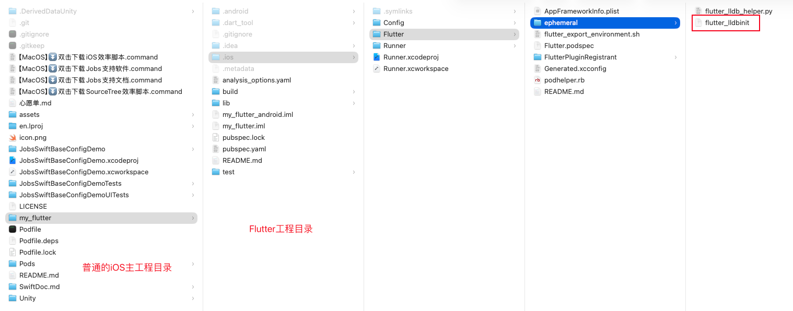
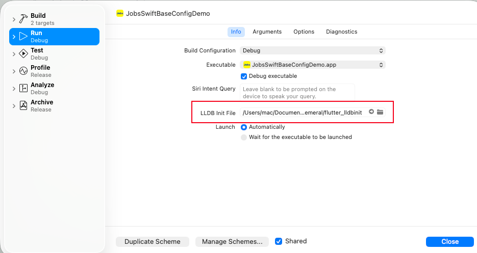

一、前言#
1、实践目的：iOS项目主工程（Swift）集成和在个别页面调用Flutter页面#
2、经验总结#
- Flutter官方文档 ➤ 将 Flutter module 集成到 iOS 项目
- 集成Flutter页面，绝对不是只引入单个的
*.dart文件，而是需要将整个Flutter工程文件全部集成（Flutter 里面还包含各种依赖） - iOS主工程项目里面的
Podfile里面，仅仅是做钩子，勾住Flutter项目里面的配置。而此文件并不直接写pod Flutter - 需要安装Flutter环境
- 必须进入Flutter目录中执行
flutter pub get生成中间产物podhelper.rb才能跑通pod install - 关于iOS程序的入口配置，会因为Flutter的出现，有一点小变化，这里总结出一个通例
二、集成步骤#
1、目录结构#
需要进入Flutter工程目录 ➤ 执行
flutter build ios --config-only➤ 生成文件flutter_lldbinit

2、Product ➤ Scheme ➤ Edit Scheme#

3、配置 Podfile ➤ pod install#
# ================================== Podfile ==================================
ENV['COCOAPODS_DISABLE_STATS'] = 'true'
# ⚠️ 与 post_install 保持一致
platform :ios, '15.6'
#source 'https://cdn.cocoapods.org/'
source 'https://github.com/CocoaPods/Specs.git'
# pod install --repo-update
# 关键：恢复这段，避免 Assets.car 重复产物冲突
install! 'cocoapods',
:deterministic_uuids => false,
:disable_input_output_paths => true
# 如需的话，你也可以加上（可选）:
# , :generate_multiple_pod_projects => false
use_frameworks! :linkage => :static
inhibit_all_warnings!
# Flutter module
FLUTTER_APPLICATION_PATH = File.expand_path('./my_flutter', __dir__)
flutter_podhelper = File.join(FLUTTER_APPLICATION_PATH, '.ios', 'Flutter', 'podhelper.rb')
unless File.exist?(flutter_podhelper)
raise "[Podfile] ❌ 找不到 #{flutter_podhelper}，请确认 Flutter module 路径正确：#{FLUTTER_APPLICATION_PATH}"
end
load flutter_podhelper
# 预留钩子，给 Podfile.deps 调用
def cocoPodsConfig
# 按需扩展
end
# 加载拆分出来的依赖定义
deps_path = File.join(__dir__, 'Podfile.deps')
unless File.exist?(deps_path)
raise "[Podfile] ❌ 找不到 #{deps_path}，请确认 Podfile.deps 存在于工程根目录"
end
instance_eval(File.read(deps_path), deps_path, 1)
# 统一工程设置 & 把 Podfile.deps 显示到 Pods 分组里
post_install do |installer|
flutter_post_install(installer) if defined?(flutter_post_install)
# -------- 1、宿主 App 工程设置 --------
installer.aggregate_targets.each do |agg|
user_project = agg.user_project
user_project.native_targets.each do |t|
t.build_configurations.each do |config|
config.build_settings['ENABLE_USER_SCRIPT_SANDBOXING'] = 'NO'
config.build_settings['IPHONEOS_DEPLOYMENT_TARGET'] = '15.0'
end
end
user_project.save
end
# -------- 2、Pods 工程最低系统版本统一 --------
pods_project = installer.pods_project
pods_project.targets.each do |t|
t.build_configurations.each do |config|
# MacOS 15 以后，苹果采取了更加严格的权限写入机制。新Swift项目如果要利用Cocoapods来集成第三方,就需要将ENABLE_USER_SCRIPT_SANDBOXING设置为NO
config.build_settings['ENABLE_USER_SCRIPT_SANDBOXING'] = 'NO'
# config.build_settings['ENABLE_USER_SCRIPT_SANDBOXING'] = '$(inherited)'
config.build_settings['IPHONEOS_DEPLOYMENT_TARGET'] = '15.0'
end
end
# -------- 3、在 Pods 分组里展示 Podfile.deps（Ruby 语法高亮） --------
main_group = pods_project.main_group
deps_relpath = '../Podfile.deps'
file_ref = main_group.find_file_by_path(deps_relpath) || main_group.new_file(deps_relpath)
if file_ref.respond_to?(:explicit_file_type=)
file_ref.explicit_file_type = 'text.script.ruby'
end
pods_project.save
end# ============================== 目标工程（新工程记得改名） ==============================
# ❤️ 新工程需要修改这里：把目标名替换为你的实际 target 名字
target 'JobsSwiftBaseConfigDemo' do
use_frameworks! :linkage => :static
flutter_application_path = File.join(__dir__, 'my_flutter')
load File.join(flutter_application_path, '.ios', 'Flutter', 'podhelper.rb')
install_all_flutter_pods(flutter_application_path)
/// TODO
end4、iOS侧的入口配置#
//
// AppDelegate.swift
// JobsSwiftBaseConfigDemo
//
// Created by Jobs on 2025/6/4.
//
#if os(OSX)
import AppKit
#elseif os(iOS) || os(tvOS)
import UIKit
#endif
if canImport(Flutter)
import Flutter
import FlutterPluginRegistrant
@main
class AppDelegate: FlutterAppDelegate{
lazy var flutterEngine: FlutterEngine = {
let e = FlutterEngine(name: "jobs_flutter_engine")
e.run()
GeneratedPluginRegistrant.register(with: e)
FlutterBridge.shared.setup(engine: e)
return e
}()
override func application(
_ application: UIApplication,
didFinishLaunchingWithOptions launchOptions: [UIApplication.LaunchOptionsKey: Any]?
) -> Bool {
SA()
return super.application(application, didFinishLaunchingWithOptions: launchOptions)
}
// MARK: UISceneSession Lifecycle
override func application(
_ application: UIApplication,
configurationForConnecting connectingSceneSession: UISceneSession,
options: UIScene.ConnectionOptions
) -> UISceneConfiguration {
return UISceneConfiguration(name: "Default Configuration", sessionRole: connectingSceneSession.role)
}
}
#else
@main
class AppDelegate: UIResponder, UIApplicationDelegate {
lazy var flutterEngine = FlutterEngine(name: "my flutter engine")
override func application(
_ application: UIApplication,
didFinishLaunchingWithOptions launchOptions: [UIApplication.LaunchOptionsKey: Any]?
) -> Bool {
SA()
return true
}
// MARK: UISceneSession Lifecycle
override func application(
_ application: UIApplication,
configurationForConnecting connectingSceneSession: UISceneSession,
options: UIScene.ConnectionOptions
) -> UISceneConfiguration {
return UISceneConfiguration(name: "Default Configuration", sessionRole: connectingSceneSession.role)
}
}
#endif
extension AppDelegate {
func SA(){
_ = flutterEngine
/// TODO
}
}